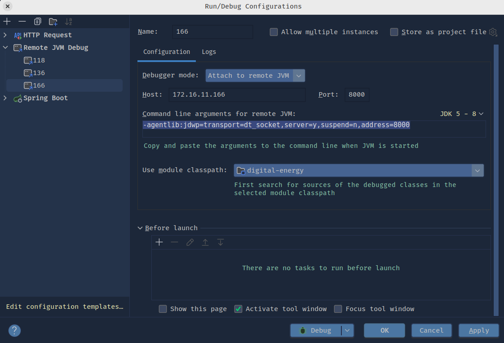

JDK 工具[1]¶
在 JDK 的 bin 目录下，为 JAVA 开发人员提供了许多工具，从使用方式来说，可以分为两种：
直接执行这些程序，比如 jstack、jmap 等，这种方式需要记住不同命令的使用方式，个人更偏向使用 jcmd，但这种方式输出的信息更全面。
使用
jcmd <pid | main class> <command>的方式，这种方式可以利用jcmd <pid> help查看支持的子命令，使用方式更统一、简单。
编译¶
javac 指定目录编译：
➜ javac greetings/*.java
➜ ls greetings
Aloha.class GutenTag.class Hello.class Hi.class
Aloha.java GutenTag.java Hello.java Hi.java
指定编译时的类路径，用于查找依赖的类和包编译：
➜ javac -classpath /examples:/lib/Banners.jar /examples/greetings/Hi.java
反编译¶
javap 反编译 Java 字节码文件（.class 文件），将其转换成可读的 Java 代码。
下面是一些常用的 javap 命令选项：
-verbose：输出详细的反编译信息，包括类名、父类、接口、字段、方法等。
-classpath
➜ javap -v Hello
Warning: File ./Hello.class does not contain class Hello
Classfile /home/lighk/IdeaProjects/digital-energy/src/test/java/com/custom/de/Hello.class
Last modified Jun 24, 2024; size 354 bytes
SHA-256 checksum 3d1583ca57fed9acfeaefb2f97d657d61108c0eafe342b593bee7d3a2d9d1786
Compiled from "Hello.java"
public class com.custom.de.Hello
minor version: 0
major version: 66
flags: (0x0021) ACC_PUBLIC, ACC_SUPER
this_class: #10 // com/custom/de/Hello
super_class: #2 // java/lang/Object
interfaces: 0, fields: 1, methods: 2, attributes: 1
Constant pool:
#1 = Methodref #2.#3 // java/lang/Object."<init>":()V
#2 = Class #4 // java/lang/Object
#3 = NameAndType #5:#6 // "<init>":()V
#4 = Utf8 java/lang/Object
#5 = Utf8 <init>
#6 = Utf8 ()V
#7 = String #8 // zhangSan
#8 = Utf8 zhangSan
#9 = Fieldref #10.#11 // com/custom/de/Hello.name:Ljava/lang/String;
#10 = Class #12 // com/custom/de/Hello
#11 = NameAndType #13:#14 // name:Ljava/lang/String;
#12 = Utf8 com/custom/de/Hello
#13 = Utf8 name
#14 = Utf8 Ljava/lang/String;
#15 = Utf8 Code
#16 = Utf8 LineNumberTable
#17 = Utf8 getName
#18 = Utf8 ()Ljava/lang/String;
#19 = Utf8 SourceFile
#20 = Utf8 Hello.java
{
public com.custom.de.Hello();
descriptor: ()V
flags: (0x0001) ACC_PUBLIC
Code:
stack=2, locals=1, args_size=1
0: aload_0
1: invokespecial #1 // Method java/lang/Object."<init>":()V
4: aload_0
5: ldc #7 // String zhangSan
7: putfield #9 // Field name:Ljava/lang/String;
10: return
LineNumberTable:
line 3: 0
line 4: 4
public java.lang.String getName();
descriptor: ()Ljava/lang/String;
flags: (0x0001) ACC_PUBLIC
Code:
stack=1, locals=1, args_size=1
0: aload_0
1: getfield #9 // Field name:Ljava/lang/String;
4: areturn
LineNumberTable:
line 7: 0
}
SourceFile: "Hello.java"
进程启动¶
java 命令用于运行Java程序（执行Java类的main方法，目标文件是字节码文件，即javac编译后的领土 *.class 文件），使用示例如下：
➜ java -classpath lib/*:. com.example.HelloWorld
常用的 java 命令参数：
<classname> [args...]：运行指定的 Java 类，例如java com.example.HelloWorld表示运行com.example.HelloWorld类的main方法，并传递空的命令行参数。-classpath <path>：指定类路径，用于查找依赖的类和包。-Xmx<size>：设置 Java 堆内存的最大值，例如-Xmx512m表示最大堆内存为 512 MB。-Xms<size>：设置 Java 堆内存的初始值，例如-Xms256m表示初始堆内存为 256 MB。-D<name>=<value>：设置系统属性，例如 -Dfile.encoding=UTF-8 表示设置文件编码为 UTF-8。-jar <jarfile> [args...]：运行 JAR 文件，例如java -jar myapp.jar表示运行 myapp.jar 文件，并传递空的命令行参数。-agentlib:jdwp=transport=dt_socket,server=y,suspend=n,address=8000：开启端口为 8000 的远程调试模式
备注
当执行 java -jar <jarfile> 命令时发生了什么？
实际上 java 命令会按照以下步骤执行：
查找并加载 JAR 文件中的
META-INF/MANIFEST.MF文件。在
MANIFEST.MF文件中查找Main-Class属性指定的主类。加载并执行主类的
main方法。
远程调试¶
服务端配置：
jdk 1.4.x:
-Xdebug -Xrunjdwp:transport=dt_socket,server=y,suspend=n,address=8000jdk 5-8:
-agentlib:jdwp=transport=dt_socket,server=y,suspend=n,address=8000jdk 9-*:
-agentlib:jdwp=transport=dt_socket,server=y,suspend=n,address=*:8000
备注
-agentlib:jdwp 和 -Xdebug -Xrunjdwp 有什么区别呢？[2]
-Xdebug -Xrunjdwp 对后续的版本依然生效，但是以解释模式运行，没有 JIT，所以运行速度会慢一些。因此对于 jdk5 之后的版本，都建议使用 -agentlib:jdwp。
客户端配置：

JVM 参数¶
堆大小¶
-Xmx：设置 JVM 最大堆内存大小，例如 -Xmx2g 表示最大堆内存为 2GB。-Xms：设置 JVM 初始堆内存大小，例如 -Xms1g 表示初始堆内存为 1GB。
GC 日志[3]¶
# 必备
-XX:+PrintGCDetails
-XX:+PrintGCDateStamps
-XX:+PrintTenuringDistribution
-XX:+PrintHeapAtGC
-XX:+PrintReferenceGC
-XX:+PrintGCApplicationStoppedTime
# 可选
-XX:+PrintSafepointStatistics
-XX:PrintSafepointStatisticsCount=1
# GC日志输出的文件路径
-Xloggc:/path/to/gc-%t.log
# 开启日志文件分割
-XX:+UseGCLogFileRotation
# 最多分割几个文件，超过之后从头文件开始写
-XX:NumberOfGCLogFiles=14
# 每个文件上限大小，超过就触发分割
-XX:GCLogFileSize=100M
OOM 堆转储¶
# 在 JVM 抛出 OOM 异常时自动生成堆转储文件。
-XX:+HeapDumpOnOutOfMemoryError
# 指定堆转储文件的保存路径
-XX:HeapDumpPath=<path>`
注意
目录不存在
转储文件路径
种的有不存在的目录，比如 -XX:HeapDumpPath=./tmp/，但是tmp不存在，就不会生成转储文件;指定文件名
如果指定了转储存文件名，比如
-XX:HeapDumpPath=./tmp/dump.hprof, 那生成的文件名一定是dump.hprof，就可能会发生文件覆盖，所以不建议指定文件名，这样自动生成的文件名就这种形式java_pid1861234.hprof。
其他¶
-XX:+UseParallelGC：使用并行垃圾回收器。-XX:+UseConcMarkSweepGC：使用 CMS 垃圾回收器。-XX:+UseG1GC：使用 G1 垃圾回收器。-XX:MaxPermSize=<size>：设置永久代的最大大小。-XX:MaxMetaspaceSize=<size>：设置元空间的最大大小。-XX:NewSize=<size>：设置新生代的初始大小。-XX:MaxNewSize=<size>：设置新生代的最大大小。-XX:SurvivorRatio=<ratio>：设置 Eden 区和 Survivor 区的比例。-XX:ThreadStackSize=<size>：设置线程栈的大小。
备注
JVM 参数很多，总体上可以分成三类：[4]
-：标准参数，比如-verbose:gc` 这类表示标准实现，所有的虚拟机都需要实现这些参数的功能，且向后兼容；-X：非标准参数，默认 JVM 会实现这些参数的功能，但是不保证所有的 JVM 实现都满足，且不保证向后兼容；-XX：非 Stable 参数，这些参数在不同的 JVM 上会有不同的实现，这些参数不推荐在生成环境中使用，以后很有可能会被取消，需要慎重使用；
关于JVM选项的几点：
布尔型参数：
-XX:+表示打开，-XX:-表示关闭。（比如-XX:+PrintGCDetails）；数字型参数：通过
-XX:=设定。数字可以是m/M(兆字节)，k/K(千字节)，g/G(G字节)。比如：32K表示32768字节；字符行参数：通过
-XX:=设定，通常用来指定一个文件，路径，或者一个命令列表。（比如-XX:HeapDumpPath=./java_pid.hprof）
进程查看¶
jps¶
➜ ~ jps
17242 Jps
16494 iot-hub-1.0.0-SNAPSHOT.jar
jcmd¶
➜ ~ jcmd
17296 sun.tools.jcmd.JCmd
16494 /usr/local/jdk/app/iot-hub_web/iot-hub-1.0.0-SNAPSHOT.jar --spring.config.location=file:/usr/local/jdk/app/iot-hub_web/application-public.properties,file:/usr/local/jdk/app/iot-hub_web/application-dev.properties
[root@dev ~]#
ps¶
这个其是是操作系统提供的命令，可以查看更多的信息
➜ ~ ps -aux | grep java
root 22593 0.1 6.8 7991480 1107164 ? Sl 4月30 140:58 /usr/local/webserver/jdk/bin/java -Xms2g -Xmx2g -XX:+HeapDumpOnOutOfMemoryError -Dfile.encoding=UTF-8 -XX:HeapDumpPath=/usr/local/jdk/app/datax-web-2.1.2/modules/datax-admin/bin/../logs -Dlog.path=/usr/local/jdk/app/datax-web-2.1.2/modules/datax-admin/bin/../logs -Duser.dir=/usr/local/jdk/app/datax-web-2.1.2/modules/datax-admin/bin/../ -Dserver.port=9527 -Ddata.path=/usr/local/jdk/app/datax-web-2.1.2/modules/datax-admin/bin/../data -Dmail.username=datax -Dmail.password=123456 -Dlogging.config=/usr/local/jdk/app/datax-web-2.1.2/modules/datax-admin/bin/../conf/logback.xml -classpath /usr/local/jdk/app/datax-web-2.1.2/modules/datax-admin/bin/../lib/*:/usr/local/jdk/app/datax-web-2.1.2/modules/datax-admin/bin/../conf:. com.wugui.datax.admin.DataXAdminApplication
线程查看¶
这里通过操作系统top命令查看java进程的线程：
通过
jcmd拿到进程pid通过
top -H -p <pid>，主要看哪些线程占 CPU 较高使用
jstack <pid>查看具体的线程栈
线程快照¶
jstack <pid>jcmd <pid> Thread.print
➜ ~ jstack help
Usage:
jstack [-l] <pid>
(to connect to running process)
jstack -F [-m] [-l] <pid>
(to connect to a hung process)
jstack [-m] [-l] <executable> <core>
(to connect to a core file)
jstack [-m] [-l] [server_id@]<remote server IP or hostname>
(to connect to a remote debug server)
Options:
-F to force a thread dump. Use when jstack <pid> does not respond (process is hung)
-m to print both java and native frames (mixed mode)
-l long listing. Prints additional information about locks
-h or -help to print this help message
备注
jcmd 的参数无须额外记忆（比如这里使用的Thread.print），直接使用jcmd <pid> help 就可以查看当前 java 进程支持哪些参数
内存快照¶
jmap -dump:format=b,file=heap.bin <pid>jcmd <pid> GC.heap_dump <filename>
然后可以使用如下工具分析：
小心
jmap -dump:live
live选项用于导出 Java 堆中所有存活的对象信息，执行 jmap -dump:live,format=b,file=<filename> <pid> 命令时，需要注意的是，-dump:live 选项会在目标 Java 进程中触发一次 Full GC，因此可能会对应用程序的性能产生影响。
➜ ~ jmap -help
Usage:
jmap [option] <pid>
(to connect to running process)
jmap [option] <executable <core>
(to connect to a core file)
jmap [option] [server_id@]<remote server IP or hostname>
(to connect to remote debug server)
where <option> is one of:
<none> to print same info as Solaris pmap
-heap to print java heap summary
-histo[:live] to print histogram of java object heap; if the "live"
suboption is specified, only count live objects
-clstats to print class loader statistics
-finalizerinfo to print information on objects awaiting finalization
-dump:<dump-options> to dump java heap in hprof binary format
dump-options:
live dump only live objects; if not specified,
all objects in the heap are dumped.
format=b binary format
file=<file> dump heap to <file>
Example: jmap -dump:live,format=b,file=heap.bin <pid>
-F force. Use with -dump:<dump-options> <pid> or -histo
to force a heap dump or histogram when <pid> does not
respond. The "live" suboption is not supported
in this mode.
-h | -help to print this help message
-J<flag> to pass <flag> directly to the runtime system
运行时配置信息¶
jinfo¶
jinfo <pid>
备注
➜ ~ jinfo -help
Usage:
jinfo <option> <pid>
(to connect to a running process)
where <option> is one of:
-flag <name> to print the value of the named VM flag
-flag [+|-]<name> to enable or disable the named VM flag
-flag <name>=<value> to set the named VM flag to the given value
-flags to print VM flags
-sysprops to print Java system properties
<no option> to print both VM flags and system properties
-? | -h | --help | -help to print this help message
jcmd VM.flags¶
运行时内存统计¶
对象统计信息¶
jmap -histo <pid> | head -n 15jcmd <pid> GC.class_histogram | head -n 15
num #instances #bytes class name
----------------------------------------------
1: 1587765 139550584 [C
2: 1586225 38069400 java.lang.String
3: 428156 27401984 java.util.concurrent.ConcurrentHashMap
4: 223013 19625144 java.lang.reflect.Method
5: 290854 17406264 [Ljava.lang.Object;
6: 351148 14045920 java.util.LinkedHashMap$Entry
7: 310009 9920288 java.util.concurrent.ConcurrentHashMap$Node
8: 212412 8496480 org.springframework.util.AntPathMatcher
9: 347877 8349048 java.util.ArrayList
10: 86320 8034880 [Ljava.util.HashMap$Node;
11: 214163 6853216 java.util.HashMap$Node
12: 212701 6806432 org.springframework.security.web.util.matcher.AntPathRequestMatcher
堆统计信息¶
jmap -heap <pid>jcmd <pid> GC.heap_info
Attaching to process ID 28537, please wait...
Debugger attached successfully.
Server compiler detected.
JVM version is 25.144-b01
using thread-local object allocation.
Parallel GC with 8 thread(s)
Heap Configuration:
MinHeapFreeRatio = 0
MaxHeapFreeRatio = 100
MaxHeapSize = 4294967296 (4096.0MB)
NewSize = 87031808 (83.0MB)
MaxNewSize = 1431306240 (1365.0MB)
OldSize = 175112192 (167.0MB)
NewRatio = 2
SurvivorRatio = 8
MetaspaceSize = 21807104 (20.796875MB)
CompressedClassSpaceSize = 1073741824 (1024.0MB)
MaxMetaspaceSize = 17592186044415 MB
G1HeapRegionSize = 0 (0.0MB)
Heap Usage:
PS Young Generation
Eden Space:
capacity = 236978176 (226.0MB)
used = 157770696 (150.46186065673828MB)
free = 79207480 (75.53813934326172MB)
66.57604453837978% used
From Space:
capacity = 2621440 (2.5MB)
used = 0 (0.0MB)
free = 2621440 (2.5MB)
0.0% used
To Space:
capacity = 2621440 (2.5MB)
used = 0 (0.0MB)
free = 2621440 (2.5MB)
0.0% used
PS Old Generation
capacity = 781713408 (745.5MB)
used = 409595464 (390.6206741333008MB)
free = 372117944 (354.8793258666992MB)
52.39713938743136% used
GC 情况¶
jstat -[option] pid [interval] [count]
[interval] 默认单位时 ms，[option] 的选项及其使用手册可以通过man stat查看，-gc（按照大小展示） 和 -gcutil（按照使用率展示） 使用的比较多，可以用来查看堆内存使用情况、GC 次数、GC 时间占比等。
➜ ~ jstat -gcutil 11025 1000 5
S0 S1 E O M CCS YGC YGCT FGC FGCT GCT
52.75 0.00 14.31 72.75 94.26 91.74 100 4.810 5 1.434 6.244
52.75 0.00 14.42 72.75 94.26 91.74 100 4.810 5 1.434 6.244
52.75 0.00 14.42 72.75 94.26 91.74 100 4.810 5 1.434 6.244
52.75 0.00 14.42 72.75 94.26 91.74 100 4.810 5 1.434 6.244
52.75 0.00 14.45 72.75 94.26 91.74 100 4.810 5 1.434 6.244
全能的 jhsdb 和 jcmd¶
jcmd 诊断¶
向正在运行的 Java 虚拟机 （JVM） 发送诊断命令请求，支持许多子命令，具体支持哪些可以通过jcmd <pid> help 查看。比如：
➜ ~ jcmd 28537 help
28537:
The following commands are available:
JFR.stop
JFR.start
JFR.dump
JFR.check
VM.native_memory
VM.check_commercial_features
VM.unlock_commercial_features
ManagementAgent.stop
ManagementAgent.start_local
ManagementAgent.start
GC.rotate_log
Thread.print
GC.class_stats
GC.class_histogram
GC.heap_dump
GC.run_finalization
GC.run
VM.uptime
VM.flags
VM.system_properties
VM.command_line
VM.version
help
jhsdb 调试分析¶
jhsdb 是 JDK 自带的一款命令行工具，即 Java HotSpot Serviceability Agent Debugging Tool，用于对 HotSpot JVM 进行调试和分析，也支持堆 JVM 崩溃后转储的 core 文件进行分析调试。 使用方式如下:
jhsdb [subcmd] [--pid pid | --exe executable --core coredump]
其中 subcmd 支持：
jhsdb clhsdb： Starts the interactive command-line debugger.
jhsdb hsdb： Starts the interactive GUI debugger.
jhsdb debugd：Starts the remote debug server.
jhsdb jstack：Prints stack and locks information.
jhsdb jmap：Prints heap information.
jhsdb jinfo： Prints basic JVM information.
jhsdb jsnap： Prints performance counter information.
备注
coredump
在计算机系统中，进程是操作系统资源的一种抽象，每个进程都有自己的内存空间，包括代码、数据、堆栈等。当进程出现错误或崩溃时，操作系统会将进程的内存状态保存到一个特殊的文件中，这个文件就是所谓的 core 文件（也称为转储文件或映像文件）。
Core 文件的本质是进程的内存映像，它包含了进程在崩溃或出现错误时的完整内存状态，包括代码、数据、堆栈、寄存器状态、打开文件等信息。Core 文件可以用于进程崩溃后的调试和分析，通过分析 core 文件可以了解进程崩溃的原因、定位错误的位置等，从而帮助开发人员修复程序的 bug。
在 Java 中，如果 JVM 出现了严重错误（如 OutOfMemoryError），JVM 也会生成一个 core 文件，这个 core 文件包含了 JVM 的内存状态。通过分析 JVM 的 core 文件，可以了解 JVM 崩溃的原因、定位错误的位置等，从而帮助开发人员修复程序的 bug。
使用 jstack 也可以查看 core 文件中的线程栈快照：
jstack java core.26492使用 jmap 也可以查看 core 文件中的堆快照：
jmap java core.14652
Dump Type |
Use Case |
Contains |
|---|---|---|
Heap Dump |
诊断内存问题，如OutOfMemoryError |
堆中的对象，线程栈 |
Thread Dump |
诊断性能问题, 如死锁，无限循环 |
线程栈、线程状态 |
Core Dump |
调试 native 库引发的崩溃问题 |
进程的内存快照 |